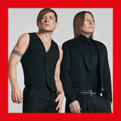

Bi-2 is a Russian alternative rock band, formed in the 80's in Bobruisk, Belarus. It was one of the most successful with many sales and chart-hits in Russia. Bi-2 was awarded MTV Russian Music Awards for Best Rock Act in 2007. In 1999 Bi-2 moved to Russia, where they previously tried to release their already recorded album "Bespolaya i Grustnaya Lubov" (Genderless and Sad Love, 1998), but their plans were ruined by the Russian financial crisis of 1998, which affected the record business. In 1999, the band consisted only of two men, but the lineup soon was increased by sessional musicians. The band went up to popularity only in 2000, recording the score for popular Brother 2 movie by Aleksei Balabanov. Several score songs, included in the Bi-2 eponymous debut album, shook rock radio charts, including the influential Nashe Radio chart. Bi-2 continued with "Meow Kiss Me" (2001) and "Inomarki" (2004), both sold gold in Russia. Each of their albums included duet records with other rock musicians from such bands as Splean, Chaif, Nochniye Snaiperi, Zemfira, and others. Videos for Bi-2 songs often appear on MTV Russia. In 2005 the double CD "Nechetny Voin" was released, which consists completely of duets and collaborations.